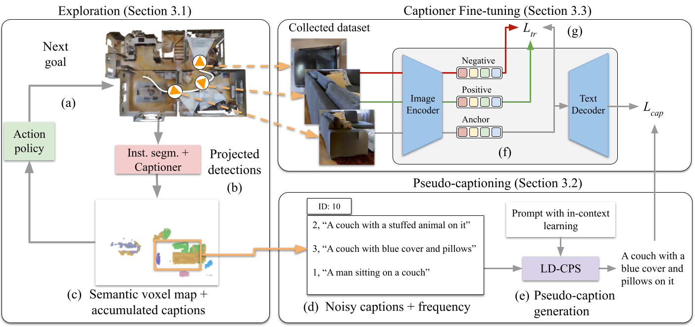
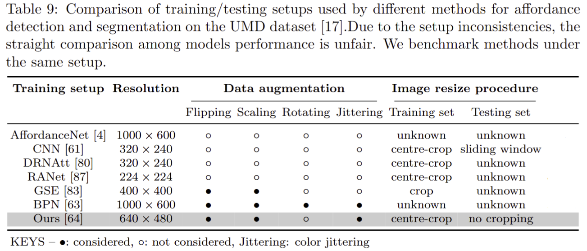

About me
I am a PostDoc in the PAVIS group at the Istituto Italiano di Tecnologia (IIT).
The main focus of my research activity is the design of computer vision models that enable robots to explore and interact with objects
or people in the environment.
Before joining IIT, I was a PhD student in Interactive and Cognitive Environments, a joint Doctorate between University of Genoa and Queen Mary University of London. The main topic of my PhD research was Affordance Segmentation that identifies the surfaces of potential interaction between an agent (e.g. a robotic hand) and an object relying only on visual information. The exciting and fascinating aspect of Affordance Segmentation is the connection to robotic and prosthetic applications, enabling assistive technologies (e.g., grasping, object manipulation) or collaborative human-robot scenarios.
Before joining IIT, I was a PhD student in Interactive and Cognitive Environments, a joint Doctorate between University of Genoa and Queen Mary University of London. The main topic of my PhD research was Affordance Segmentation that identifies the surfaces of potential interaction between an agent (e.g. a robotic hand) and an object relying only on visual information. The exciting and fascinating aspect of Affordance Segmentation is the connection to robotic and prosthetic applications, enabling assistive technologies (e.g., grasping, object manipulation) or collaborative human-robot scenarios.
Research interests
Embodied AI | Computer Vision | Machine Learning | Multi-modal fusion | Affordance detection and segmentation
Reviewing service
Award
- Outstanding Reviewer, British Machine Vision Conference (BMVC), 2024
166 out of 860 reviewers (top 19%)
[link]
Conferences
- Computer Vision and Pattern Recognition (CVPR), 2025
- European Conference on Computer Vision (ECCV), 2024 (helped reviewing 1 paper)
- British Machine Vision Conference (BMVC), 2024
Latest works

|
Visual Affordances: Enabling Robots to Understand Object Functionality
T. Apicella, A. Xompero, A. Cavallaro Preprint, 2025 [arXiv] [website] [repository] |
|

|
Embodied Image Captioning: Self-supervised Learning Agents for Spatially Coherent Image Descriptions
T. Galliena, T. Apicella, S. Rosa, P. Morerio, A. Del Bue, L. Natale Preprint, 2025 [arXiv] [website] [code] |
|

|
Segmenting Object Affordances: Reproducibility and Sensitivity to Scale
T. Apicella, A. Xompero, P. Gastaldo, A. Cavallaro European Conference on Computer Vision Workshops (ECCVW), 2024 [arXiv] [website] [code] [trained models] |

|
Affordance segmentation of hand-occluded containers from exocentric images
T. Apicella, A. Xompero, E. Ragusa, R. Berta, A. Cavallaro, P. Gastaldo International Conference on Computer Vision Workshops (ICCVW), 2023 [arXiv] [website] [code] [model] [mixed-reality data] [real testing data] |